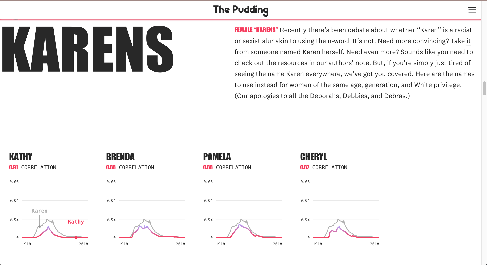
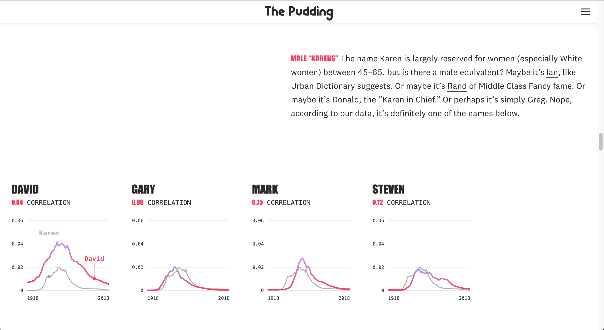
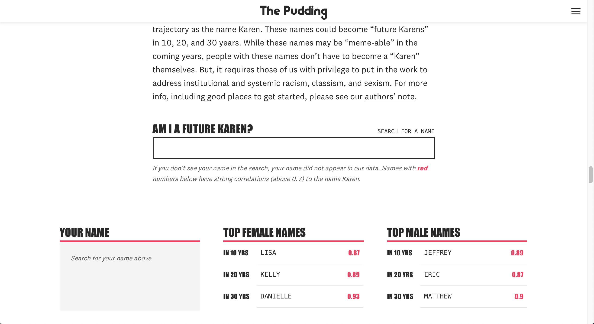
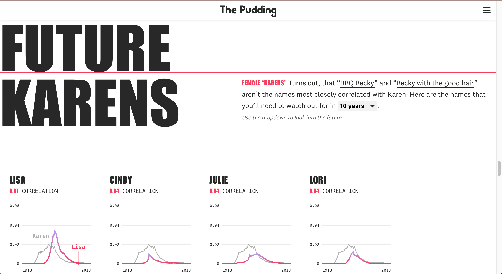
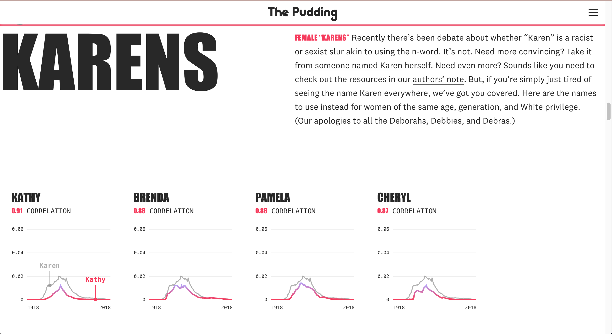
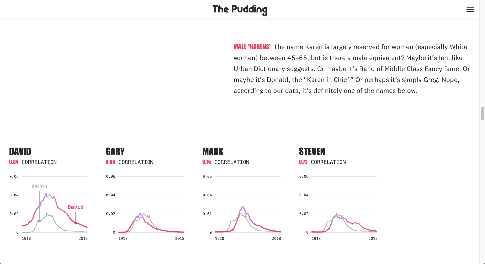
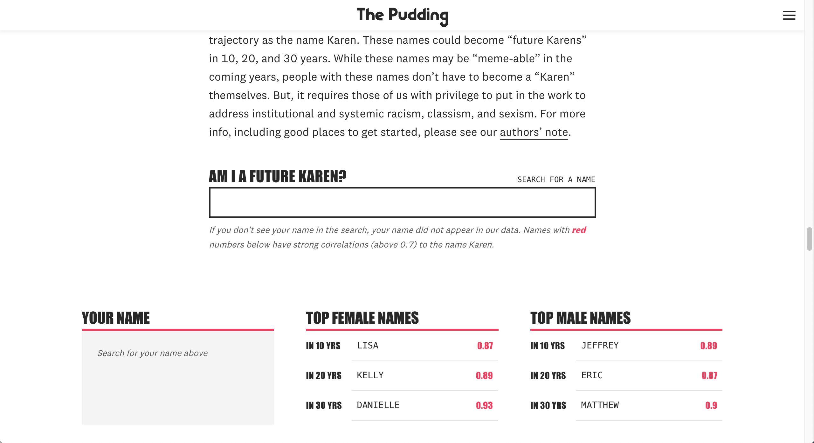
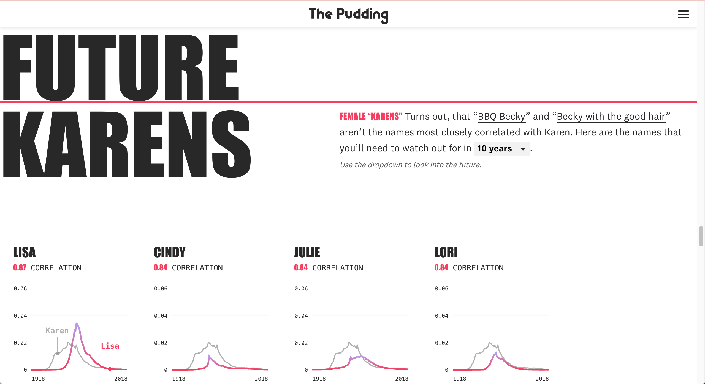

Screenshots


“Karen” is having a moment — and that’s not a good thing. You’ve seen her at Red Lobster, stuck in traffic with Kidz Bop, racial profiling a Filipino man chalking “Black Lives Matter” outside his home and Black women at their apartment complex pool, and with her dog off leash endangering a Black man’s life in Central Park.
But how did the name Karen become cultural flashpoint “Karen” — an entitled middle-aged White woman who needs to speak to the manager? And what other names can be used in the same way as “Karen”? We used naming data from the Social Security Administration to find out.
This story was in collaboration with The Pudding’s Jan Diehm and freelance contributor Sara Stoudt. The idea was originally Jan’s and she handled the bulk of the writing and design. Sara analyzed the data and worked with us to make sure we were displaying it correctly.
